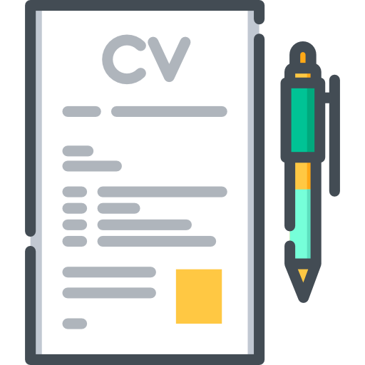

- Analyse and Visualization of data with multiple types of graphs.
- After doing appropriate data preprocessing we use dimensionality reduction technique NLPCA for visualization of categorical association between attributes

I’m a student at IIT Kharagpur, pursing a B. Tech degree in Engineering. I am a robotics and artificial intelligence enthusiast. I am from Alwar, Rajasthan. I have done a lots of projects in the field of artificial intelligence. I like to apply my theoretical knowledge & technical skills in the field of Machine Learning, Deep Learning, Image Processing, Computer Vision & Natural Language Processing, accrued from research projects & internships to conflux the spheres of technology and innovation. I am also done a research intern at Samunsung R & D Institute - India. In my free time I like to spend time, in making hardware gadgets and games. I am also do freelancing.
I play football, volleyball, cricket and many more games. I like to exercise to keep myself fit.
 |
- Analyse and Visualization of data with multiple types of graphs.
- After doing appropriate data preprocessing we use dimensionality reduction technique NLPCA for visualization of categorical association between attributes
- Implemented a task-dependent SalGAN network in Tensorflow and task-dependent SAlNet network in Keras using custom loss function with Salicon dataset.
- Compare the result with different type of saliency approaches.
- One can see our results output on my Youtube channel.
- We formed and visualize Concept maps, aka "Knowledge Graph" between topics and their relevant words from text dataset using Natural Language Processing.
- Code and result on my GitHub repository.
- Implemented Bidirectional LSTM encoder of input sentences and max-pooling operation over timesteps.
- A mathematical technique was used to fetch information to produce a relationship between inputs and then classify.
- Built a security system with the help of microcontroller ATmega2560. The system includes tracking location in a given range, alarm alert message and sound, operated by mobile app and password protected which is stored in SD card.
- Code and other detail of project can be found on my GitHub repository.
- Built an Obstacle avoiding Robocar using Atmenga320p, Proximity sensor, IR, HC-05 Bluetooth module, servo and DC motors.
- Code and other detail of project can be found on our GitHub repository.
- Research on similarity detection using machine learning and image processing techniques.
- We have to find the simalrity betweeen two object images. Objects can be anything like refrigerator, tv, washing machine, ac etc. We develop a algorithm with fusion of image processing and a deep convo neural networks to detect the similarity.
-Built a webpage for testing two cognitive tasks- Attention and Memory and launched the webpage using google cloud
platform(GCP).
- Programming Language used for this task are HTML, CSS, Javascript, AngularJS.
- You can check this from http://35.238.141.106/ webpage and also can test your memory (beware from negative marking 😜)
- If link not open just copy and past in new tab.
- Built a Quadcopter using Arduino Mega as a flight controller in which we use brushless DC motors, battery with output voltage 11.1V, 2.4Ghz 6CH Transmitter and Receiver (approx. 2Km range in line of sight), I3G4250D 3-axis Gyroscope as components.
- In this project I built a classification model using CNN network that can classify crack and potholes with an accuracy of 94.85%.
- Used IP techniques like Hough transform and perspective transformation to find length and area covered by crack and potholes.
- In this project I built a solar mobile power bank with help of rechargeable battery cells, a solar plate, a buck converter that drop the voltage at 5V.
- We can charge the power bank with the help of both electricity and sunlight, this power bank has 12000mAH capacity.
- Forecast three electrical consumption meter reading with the help of different Data Analytics and Machine Learning techniques.
- Analyse and Visualize the dataset with different type of graphs, like bar graphs, heat maps, density plots, box plots, pie charts.
- Forecast data with ensemble different models(CNN-LSTM, FbProphet, Arima, LightGBM) after feature engineering on data.
- This application is developed for the class attendance and crowd monitoring. I built a model for face detection and recognition in video and count people in an image.
- Used OpenCV libraries and image processing techniques for face detection and recognition.
-Used CSRNet for counting people in an image, it uses VGG-16 in its starting layers.
Email: parveenkumar081998@gmail.com | parveenkumar081998@iitkgp.ac.in